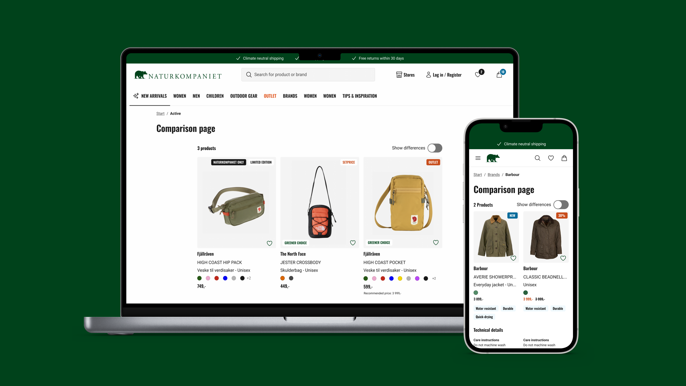
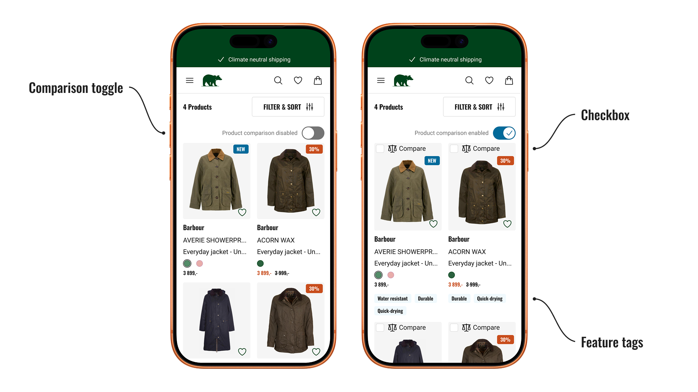
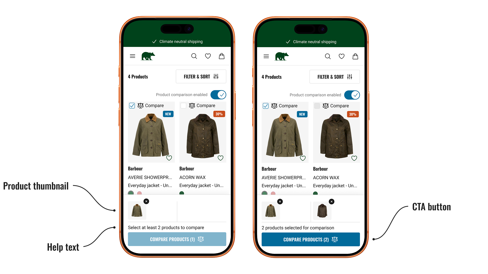
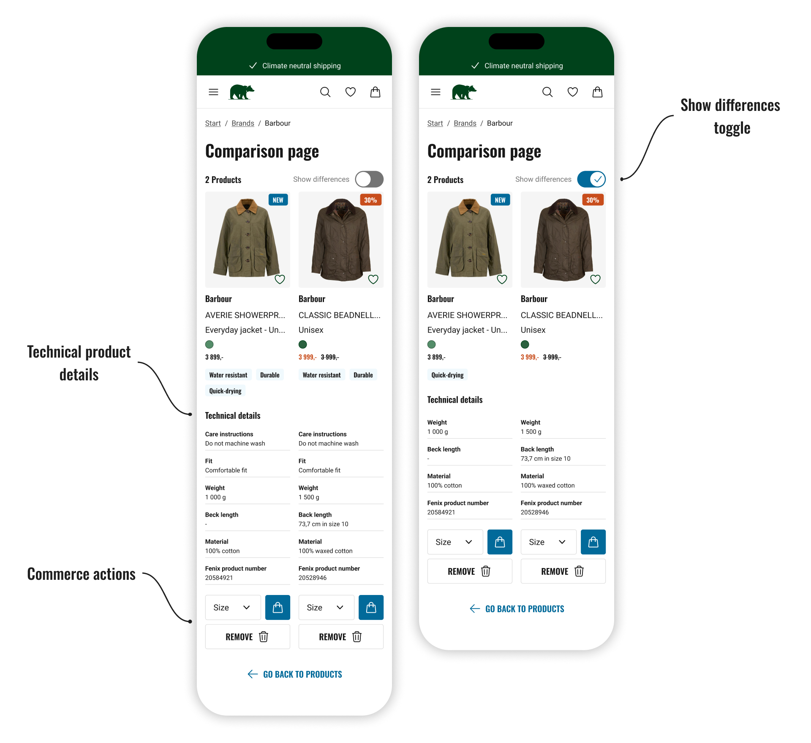
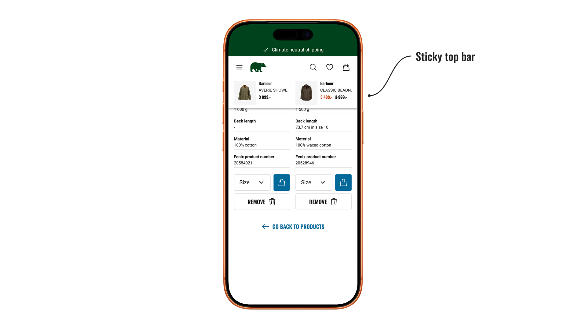

Comparison feature

I was tasked with designing a comparison feature for Naturkompaniet's e-commerce platform, enabling customers to easily compare similar products. At the time, no such feature existed, which made it difficult for users to evaluate alternatives and make confident purchase decisions.
Users struggled to choose between similar products, which increased the risk of abandoned purchases. Existing surveys and usability tests highlighted this as a recurring issue, particularly on the product listing page where users had limited support for efficient comparison.
Another challenge was the limited scope for conducting new user research. To address this, I relied on existing insights and complemented them with desktop research, benchmarking how other e-commerce platforms solve similar problems.
I conducted desktop research and synthesized the findings with existing insights from previous studies. The key insights that informed the design were:
Developed intuitive, interactive wireframes in Figma, iteratively refining them based on user feedback. Utilized existing UI patterns from the design system and designed new components as needed, ensuring accessibility throughout.
Conducted five semi-structured user observations to evaluate the design, and iteratively refined it based on usability insights and user satisfaction.
The solution was documented in Figma and handed over to developers to support future development, validation, and implementation.
The solution focused on helping users compare similar products more efficiently on the product listing page, while keeping cognitive load low and staying consistent with existing UI patterns.
A toggle was added on the product listing page to activate a comparison mode, expanding product cards to reveal feature tags that highlight key differences between products, and a checkbox for selecting items for comparison. This way users who aren't comparing are not overwhelmed.

A selection bar displays thumbnails of the chosen products, giving users a clear overview of their selection. A CTA button, supported by help text, activates once enough items are chosen and directs users to the comparison page.

Products are displayed side-by-side on a comparison page, with key technical details listed beneath each product to support clear, feature-by-feature comparison.
A toggle allows users to focus only on differing specifications, helping reduce cognitive load.
Commerce actions such as size selection and add to cart are available directly in the comparison view, enabling users to act on their decision without leaving the page and supporting conversion.

A sticky top bar appears when scrolling, showing product thumbnails, names, and prices. This helps users maintain context and easily associate technical details with the correct product.

The design addresses a recurring problem where users struggled to compare similar products, leading to abandoned purchases. By introducing feature tags in the product listing view and a dedicated comparison page, the solution gives users better support throughout their decision-making process — expected to reduce drop-off at the product listing page and a meaningful step toward solving a clearly validated problem.
Although implementation fell outside the scope of my internship, the solution was documented and handed off for further development. The implementation was planned to follow an MVP methodology, starting with the feature tags in the expanded product cards. This would allow for early validation with real user data before scaling further, with each phase building on learnings from the previous one.